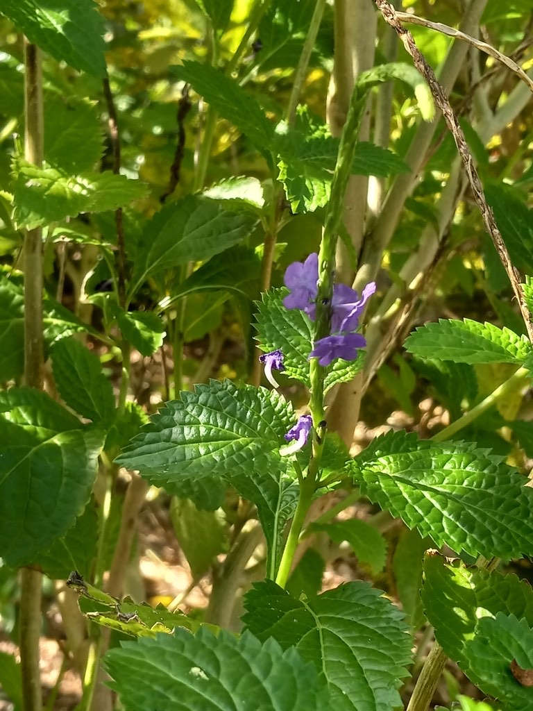

- The name Porterweed comes from the Caribbean tradition of boiling and fermenting the leaves into a dark, foaming medicinal brew — the resulting liquid resembled a British Porter ale so closely that the name stuck.
- A botanical identity issue worth knowing: this species (S. cayennensis) is often sold in Florida nurseries as "Porterweed" but is actually a non-native South American introduction that outcompetes and hybridizes with the true Florida native (S. jamaicensis). The native grows low and ground-hugging; this one grows tall and woody.
- Grows in the butterfly garden as part of the 2026 refurbishment and Monarch Waystation planting.
Non-native. Native to tropical Americas, the West Indies, and South America. Naturalized across Florida. Member of Verbenaceae — the verbena family. Note: the true Florida native porterweed is Stachytarpheta jamaicensis — a low-growing groundcover distinct from this taller, non-native species.
- Blue Porterweed is one of the most dependable butterfly-nectar plants in a Florida garden. Its slender, arching flower spikes open a few small blue-purple flowers at a time, day after day over a long season, and that steady supply draws skippers, swallowtails, and many other butterflies, along with bees and the occasional hummingbird. The arching spikes give it another common name, Rattail.
- The name Porterweed comes from a Caribbean tradition of boiling and fermenting the leaves into a dark, porter-like drink.
- The park's plant is the non-native species, Stachytarpheta cayennensis, naturalized from tropical America - worth distinguishing from the true Florida native porterweed, Stachytarpheta jamaicensis, a lower, more sprawling plant that is the better choice for native-plant gardens.
- It is easy, fast, and tough, blooming in heat and poor soil, which is why it is so widely planted for pollinators.
One of the more productive butterfly nectar plants for Florida. Skippers, swallowtails, and other butterflies work the flower spikes actively. The continuous blooming habit provides a long nectar window.
Hummingbirds also visit. The long spikes and tubular flowers are accessible to hovering visitors.
Small, blue-purple, tubular, in elongating spikes. Individual flowers open progressively from the base up the spike. Nearly continuous bloom.
Opposite, oval to ovate, with toothed margins. Medium green.
Sprawling to upright native wildflower, 2 to 4 feet. Can be leggy without pruning.
The elongating blue-purple flower spikes are the primary feature. Watch for butterfly activity along the spikes. Distinguish from non-native Stachytarpheta jamaicensis by comparing leaf width — the native S. cayennensis has narrower leaves.
This isn't eaten as a food plant, though it appears in Caribbean folk remedies. It's not toxic to people or dogs.


- © teschaim (CC-BY-NC), via iNaturalist
- © donyiyt (CC-BY-NC), via iNaturalist